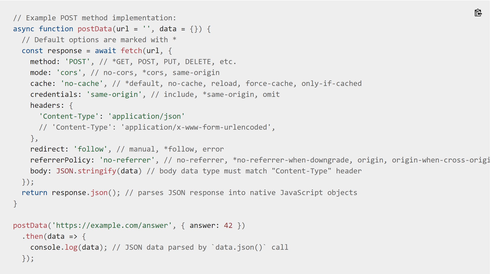
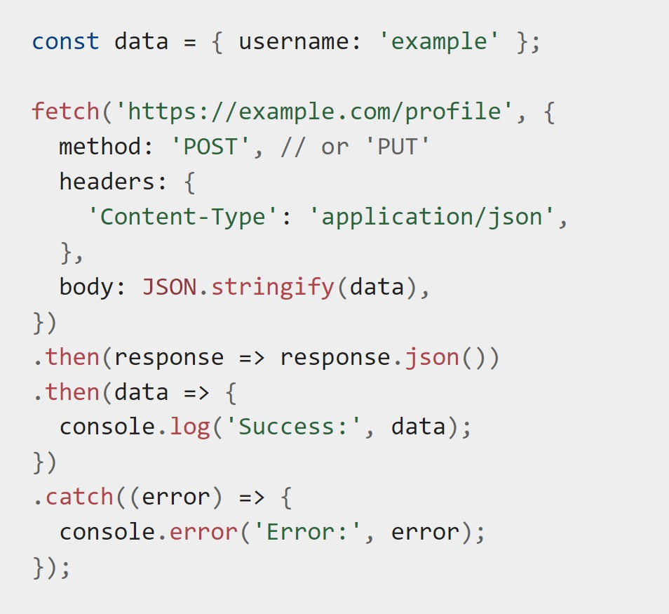
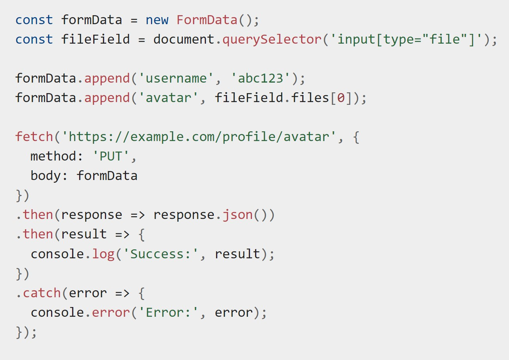
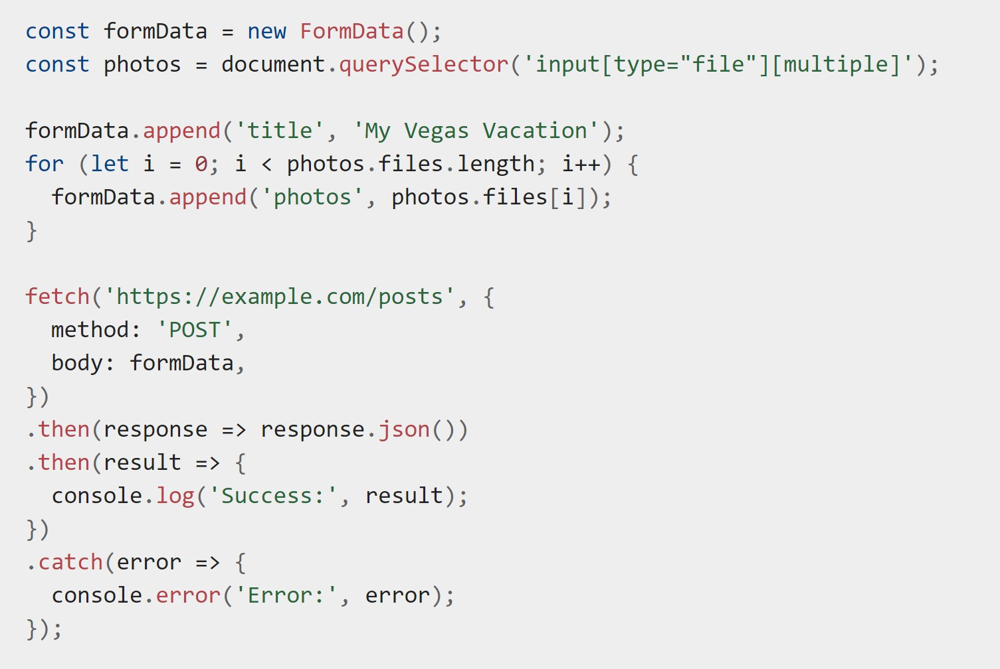

Client-Side Form Validation
-Helps ensure data submitted fits the requirements set forth in the form controls.
-Important for UX
-Isn't enough to protect your site. You can be hacked if you rely solely on this. See here.
-Guides user on what to enter. Gets the right data in the right format, protects user data, protects our site from malicious users.
TYPES OF CLIENT-SIDE VALIDATION
-Built-in form validation
-Uses HTML 5 form validation features.
-Doesn't require much JS, so better performance, but not as customizable
JavaScript Validation
-Customizable, but you have to build it.
BUILT-IN FORM VALIDATION
-required, minlength/maxlength (strings), min, max (numbers), type (specifies number, email or other specific preset), pattern
-When all "required" met, form is valid. If not, invalid
-When valid, element matches :valid css pseudo class (ie, can add styling to show valid)
-Form will submit.
-When invalid, form matches pseudo class :invalid. Cannot submit—browser will block
BUILT IN FORM VALIDATION EXAMPLE
-Validation-related attributes.
VALIDATING FORMS USING JS
The Constraint Validation API
-Methods and properties available on the form element DOM interfaces
-HTMLButtonElement
-HTMLFieldSetElement
-HTMLInputElement
-HTMLOutputElement
-HTMLSelectElement
-HTMLTextAreaElement
Constraint validation API makes these properties available:
validationMessage
validity
patternMismatch
tooLong
maxLength
tooShort
minlength
rangeOverflow
rangeUnderflow
typeMismatch
valid
valueMissing
willValidate
Implementing a Customized Error Message
-Automated error messages can't be changed with CSS and depent on browser locale (cauising potential language conflicts)
-Custom error messages fix this.
EXAMPLE:
EXAMPLE 2:
Validating forms without a built-in API
-Sometimes you might not want to use the Constraint Validation API.
-You can still use JS to validate a form, but you have to write your own.
-Determine what kind of validation, what to do if it doesn't validate, and how to help user correct data.
-Useful UI articles about this here, here, here, and here.
EXAMPLE 3: A form tht doesn't use the constraint validation API
USING FETCH
-Fetch API lets JS access and manipulate parts of the HTTP pipeline such as requests and respones.
-Provides a global fetch() method for easy asynch fetching of resources
-basic fetch syntax: fetch('http://example.com/movies.json')
.then(response => response.json())
.then(data => console.log(data));
-This is just an HTTP response, not the actual JSON.
-To gt JSON body content from response, we use the json() method
Supplying request options
=Fetch() method can accept a secont parameter, an init object to allow you to control settings. Details here.
Example of the fetch syntax
Sending a request with credentials included
-add credentials: 'include' to the init object you pass to fetch() method. Ex: fetch('https://example.com', {
credentials: 'include'
});
Uploading JSON data
-Use fetch() to POST JSNO-encoded data
  